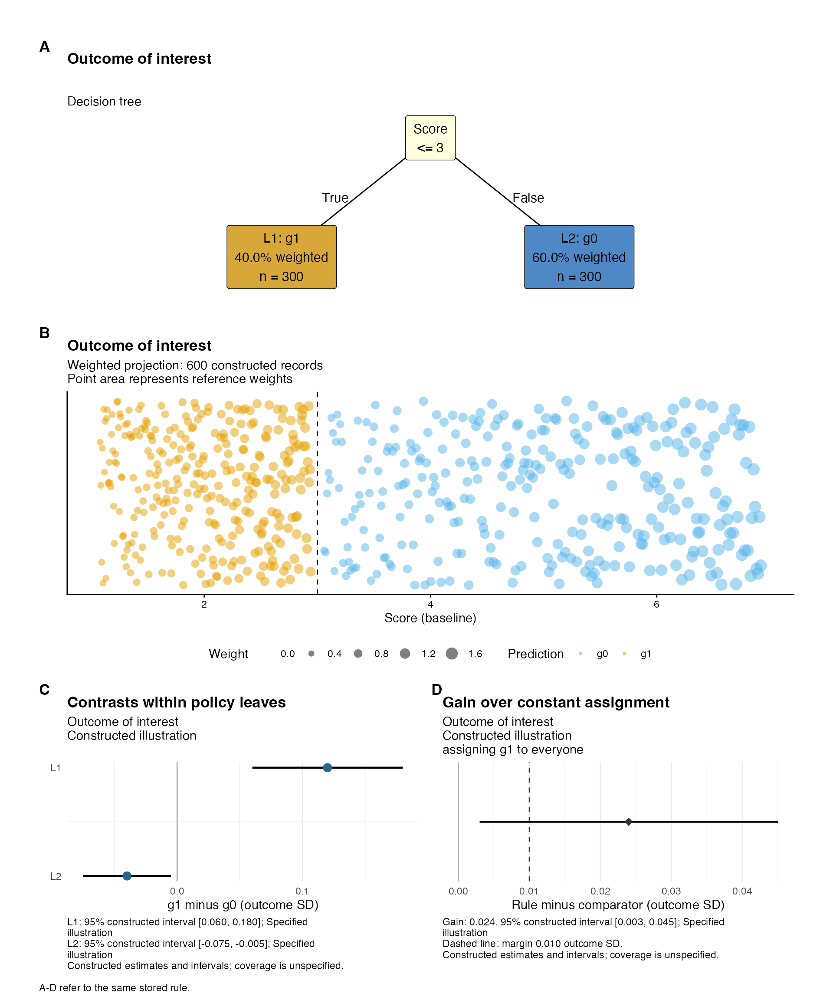

Policy rules, weighted projections and stored evaluation
Source:vignettes/policy-reporting-stored.Rmd
policy-reporting-stored.RmdA policy-tree report should let readers follow the assignment rule, see the people in each leaf, and assess the reported outcome contrasts. The value comparison then asks how much the rule gains over a specified constant assignment. These quantities can concern different scientific targets. Each report therefore records the rule, population, scale and evaluation method.
margot_policy_reporting_data() binds stored estimates to
those identities. Two plots,
margot_plot_policy_leaf_effects() and
margot_plot_policy_value_gain(), share their numerical
tables with matching text functions.
margot_report_policy_tree(reporting_data = ...) combines
them with the existing margot_plot_policy_combo(). The
decision tree and projection occupy the taller A/B rows; C/D appear side
by side below. Calls with reporting_data = NULL retain the
legacy report calculations.
A constructed example
The example has 600 constructed reference records, with 300 in each leaf. Unequal weights give the leaves 40% and 60% of the total reference weight. The rule assigns g1 at scores up to and including 3, and g0 above 3. Its four-row fitting fixture supplies the native tree representation used for plotting. Every effect estimate and interval below is stipulated; their precision is unrelated to the number of displayed points.
set.seed(20260910)
reference <- data.frame(score = c(seq(1.08, 2.94, length.out = 300),
seq(3.06, 6.92, length.out = 300)))
weights <- c(seq(.5, 1.1, length.out = 300), seq(.7, 1.7, length.out = 300))
tree <- policytree::policy_tree(
data.frame(score = c(1, 3, 4, 7)),
cbind(control = 0, treated = c(1, 1, -1, -1)),
depth = 1, min.node.size = 1
)
object <- list(results = list(model_example = list(
policy_tree_depth_1 = tree, plot_data = list(X_test = reference)
)))
leaves <- data.frame(
node_id = c(2L, 3L), leaf_label = c("L1", "L2"),
estimate = c(.12, -.04), lower = c(.06, -.075), upper = c(.18, -.005),
interval_type = "constructed", interval_level = .95,
interval_method = "Specified illustration", unavailable_reason = NA_character_
)
value <- data.frame(
estimate = .024, lower = .003, upper = .045,
interval_type = "constructed", interval_level = .95,
interval_method = "Specified illustration", unavailable_reason = NA_character_,
comparator_id = "constant_g1", comparator_label = "assigning g1 to everyone",
gain_margin = .01
)
context <- list(
outcome = "example", outcome_label = "Outcome of interest",
rule_id = "example-rule", population_id = "example-target",
population_label = "Illustrative target population",
scale_id = "example-sd", scale_label = "outcome SD",
orientation = "as_scored", weight_id = "example-analysis-weights",
evaluation_mode = "constructed", contrast_label = "g1 minus g0",
qualification = "Constructed estimates and intervals; coverage is unspecified."
)
reporting <- margot_policy_reporting_data(
tree, leaves, value, context, reference = reference,
display_weights = weights, reference_label = "600 constructed records",
display_weight_id = "reference weights"
)
stopifnot(isTRUE(all.equal(reporting$leaves$reference_share, c(.4, .6))))The constructor retains full numerical precision. It computes reference counts and shares from every supplied row, routing threshold equality to the tree’s inclusive branch. Display weights determine point area, with identical circular shapes across actions. Predictor coordinates remain exact. Vertical jitter separates points in a stump; depth-two weighted projections preserve both predictor coordinates and display each record in its applicable root branch. Zero-weight records contribute to unweighted counts and have zero point area.
report <- margot_report_policy_tree(
object, "example", depth = 1, reporting_data = reporting,
label_mapping = list(control = "g0", treated = "g1"),
projection_args = list(jitter_seed = 20260910, weight_max_size = 5),
decision_tree_args = list(text_size = 4),
reporting_heights = c(1.5, 1.7, 1)
)
report$plots$combined_plot
The reference population used for A/B can differ from the population used to evaluate the rule in C/D. Supply the complete reference rows in their plotting order and explicitly identify their weights. By default, omitted display weights mean equal weights. Participant uniqueness is a caller-verified condition, assessed using participant identifiers. Saved rule and reference signatures detect subsequent structural or row-order changes.
Standalone plots, tables and interpretations
The report object contains decision_tree,
projection, leaf_effects,
value_gain and combined_plot under
plots. Standalone functions also accept the same
reporting object. Every interval records its type, level
and supplied method. Interpretation functions compare the unrounded gain
with the resolved margin. They then format the numbers for readers.
report$table[, c("leaf_label", "estimate", "n_reference", "reference_share")]
#> # A tibble: 2 × 4
#> leaf_label estimate n_reference reference_share
#> <chr> <dbl> <int> <dbl>
#> 1 L1 0.12 300 0.4
#> 2 L2 -0.04 300 0.6
cat(paste(margot_text_policy_value_gain(reporting), collapse = "\n\n"))
#> Outcome of interest: Constructed illustration; Illustrative target population.
#>
#> Relative to assigning g1 to everyone, the stored gain is 0.024 outcome SD. The estimate exceeds the practical margin of 0.010 outcome SD.
#>
#> 95% constructed interval [0.003, 0.045]; Specified illustration.
#>
#> The interval includes gains below the practical margin.
#>
#> Constructed estimates and intervals; coverage is unspecified.Here the gain of 0.024 SD exceeds the practical margin of 0.01 SD. However, the constructed interval, from 0.003 to 0.045 SD, includes gains below that margin. The estimate, interval and margin answer different questions. The analysis supplies its resolved margin to the report. The existing policy-learning defaults of 0.01 for depth improvement and tree-versus-constant gain remain configurable. Intervention costs require their own specification.
For reversed outcomes, supply estimates and endpoints on the already
reversed scale, set orientation = "reversed", and include
the reversal in outcome_label. The reporting layer
preserves the supplied numbers and labels their orientation. Leaf
comparisons describe the named action contrast within each group. A
difference between leaf effects requires a direct contrast and its
uncertainty. The effect of intervening on a splitting variable requires
a separate causal question and identification argument.
Retaining legacy results and unavailable uncertainty
Stored leaf summaries can be adapted by mapping their node
identifiers, contrasts and endpoints into the explicit table schema. For
example, a saved margot_policy_leaf_summary() table has
node_id, treatment_control_contrast,
treatment_control_ci_low and
treatment_control_ci_high. Preserve its recorded confidence
level and method. When its leaves were selected in the same full sample,
use evaluation_mode = "selected_full_sample" and
interval_type = "nominal_fixed_leaves"; those intervals
treat the selected groups as fixed and ignore selection.
For a saved cross-validation result, the selected row of
policy_selection supplies
tree_minus_honest_constant and
min_gain_over_constant. Match the model and selected depth,
retain the training-selected constant comparator, and check the recorded
value difference before adapting it. A fold-specific comparator can
change across folds; describe it as the training-selected constant
procedure with its fold-specific action choices. Supply a
value_context with
evaluation_mode = "repeated_learning" and its procedure
identity. The report distinguishes A–C’s selected full-sample rule from
D’s learning procedure.
Repeated-fold or repeated-split quantiles describe partition variability. A sampling interval requires a variance estimator that accounts for participant reuse across folds and repeats. When compatible uncertainty is unavailable, retain the estimate and provide its reason:
value_unavailable <- value
value_unavailable$lower <- value_unavailable$upper <- NA_real_
value_unavailable$interval_type <- "unavailable"
value_unavailable$unavailable_reason <- "Saved outputs omit compatible sampling uncertainty"
without_interval <- margot_policy_reporting_data(tree, leaves, value_unavailable, context)
cat(paste(margot_text_policy_value_gain(without_interval), collapse = "\n\n"))
#> Outcome of interest: Constructed illustration; Illustrative target population.
#>
#> Relative to assigning g1 to everyone, the stored gain is 0.024 outcome SD. The estimate exceeds the practical margin of 0.010 outcome SD.
#>
#> Interval unavailable: Saved outputs omit compatible sampling uncertainty.
#>
#> Constructed estimates and intervals; coverage is unspecified.Independently evaluated rules
Learning a rule and choosing its comparator on development participants can leave independent participants for evaluation. Conditional on development, inference can then concern the population value difference for that realised rule. Repeated tree learning addresses the separate question of how the learning procedure varies across development samples.
The reporting interface can describe externally supplied independent
evaluation results using independent_fixed_rule, distinct
development/evaluation identities and an explicit interval method. Those
labels record caller-supplied provenance. Valid inference still requires
a justified evaluation score, nuisance estimation, weighting,
outcome-scale reference, overlap, sampling unit and sufficiently small
remaining bias. The independent interval estimator and its coverage
validation remain outside this reporting implementation. A 70/30
partition remains a candidate design.